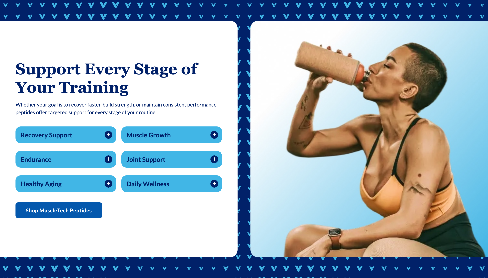
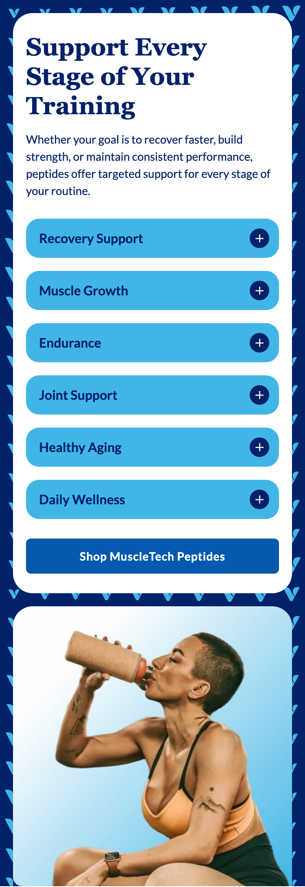
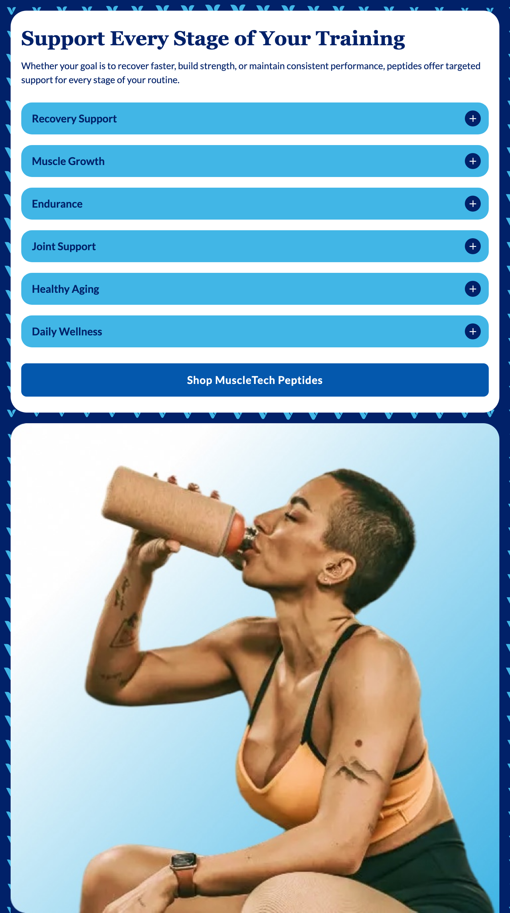
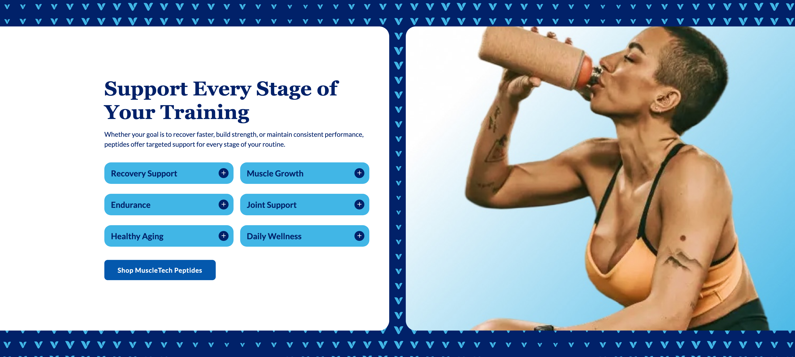

Platter component
Benefits Highlight
Transcribed from Confluence, authored by Sarah Lee, page last updated 2026-08-04. It is the client's spec, reproduced verbatim in substance. Where our implementation deviates it is recorded under Deviations, not by editing the spec.
Spec: https://getplatter.atlassian.net/wiki/spaces/TVS/pages/897286145/FSD+Benefits+Highlight
02 — Screenshots
How it renders
Captured by pnpm shots at 4 widths. Blank frames mean the captures have not been run in this checkout.




03 — Fields
What a merchandiser fills in
Generated from _schema.json, in the order Amplience shows them.
| Field | Type | Constraints | Description | |
|---|---|---|---|---|
headingHeading |
string | required | max 90 min 1 |
The main headline, e.g. "Support Every Stage of Your Training". For emphasis, wrap words in single asterisks for italic; any other formatting mark appears literally. It wraps to a second line on desktop rather than shrinking, and the card grows to fit. |
headingLevelHeading level |
string | h1 · h2 · h3default "h2" |
Choose h1 only if this module is the first thing on the page and no other h1 exists. Otherwise leave it as h2 — two h1s on one page hurts SEO. Choose h3 when the module sits underneath a section that already has an h2, so the page's heading order stays unbroken. This changes nothing you can see: the size is set separately below. | |
headingSizeHeading size (desktop / mobile) |
string | 64px / 38px · 56px / 34px · 48px / 30px · 36px / 24px · 28px / 20px · 20px / 16pxdefault "48px / 30px" |
A fixed pair from the TVS type scale — the first size applies from tablet up, the second on phones. | |
headingFontHeading font |
string | Lato · corisanderegular · Fieldsdefault "Fields" |
Fields is the serif this module is designed in and is the default. It is not yet installed on vitaminshoppe.com, so until it is, the heading falls back to Georgia — still a serif, but not the exact drawn face. Pick Lato if you would rather the heading match the rest of the site exactly than approximate the design. | |
bodyDescription |
string | max 220 | One or two sentences under the headline. Wraps rather than truncating. Leave it empty and the card shrinks around what is left, keeping the content vertically centred. | |
benefitsBenefit tiles |
array | required | Between two and six benefits, shown in the order you list them here — two across on desktop, stacked on phones. Drag a row to reorder it. Each tile is a button: tapping it opens a panel with that benefit's full description, so every tile needs both a name and a description. | |
imagePhoto |
string | required | Full URL of the photo beside the tiles. Crop it square before upload — it is shown 1:1 at every screen size and the module will cut the sides off anything wider. jpg, jpeg or png. | |
imageAltPhoto alt text |
string | required | min 1 | Describe what the photo shows, e.g. "A woman drinking from a shaker bottle after training". Required for accessibility. |
backgroundImageDecorative background |
string | Full URL of the patterned artwork behind the card and photo. The design uses a repeating chevron tile in light blue on navy; whatever you upload is tiled the same way, so supply one tile rather than a full-width image. It sits behind the content and is treated as decoration, so it needs no alt text — do not put anything readable in it. Leave empty to show the plain navy background. | ||
backgroundImageMobileDecorative background (mobile) |
string | Full URL of the phone version of the pattern. Falls back to the desktop artwork when empty, which is usually right — supply one only if the tile is too dense to read at phone width. | ||
ctaLabelButton label |
string | max 30 | The call to action under the tiles, e.g. "Shop MuscleTech Peptides". The button only renders when both a label and a link are set. On phones it stretches the full width of the card. | |
ctaUrlButton link |
string | Where the button goes. Use a relative path for vitaminshoppe.com destinations. | ||
ctaStyleButton colour |
string | dark · lightdefault "dark" |
Dark is #0458AD with white text and is the design. Light is white with #0458AD text and a thin outline — the button sits on the white card, so Light needs its outline to be visible at all and reads as a weaker second choice rather than the main action. | |
priorityPrioritise image loading |
boolean | default false |
Switch on when this module is the first thing on the page, so the photo loads immediately instead of lazily. | |
sectionIdSection ID |
string | max 50^[a-z][a-z0-9-]*$ |
A name for this specific module, used for two things. A link anywhere on the site can jump straight to it by ending the URL with # and this name, e.g. #peptide-benefits. Page-level CSS can also target this one module rather than every benefits highlight. Use lowercase letters, numbers and hyphens, start with a letter, and make it unique on the page — two modules sharing an ID will break the jump link. Leave empty if you need neither. |
04 — Sample content
A filled-in example
From _content.json. This is what the screenshots above are rendering.
{
"heading": "Support Every Stage of Your Training",
"headingLevel": "h2",
"headingSize": "48px / 30px",
"headingFont": "Fields",
"body": "Whether your goal is to recover faster, build strength, or maintain consistent performance, peptides offer targeted support for every stage of your routine.",
"benefits": [
{
"heading": "Recovery Support",
"body": "Recovery is an essential part of any training routine. Peptide formulations designed for recovery may help support the body's natural repair processes, allowing you to stay consistent with your workouts and perform at your best. Explore products formulated to complement your recovery goals and active lifestyle."
},
{
"heading": "Muscle Growth",
"body": "Building lean mass takes consistent training and the right nutritional support. Peptide formulations aimed at growth are designed to complement a protein-forward diet and a progressive training programme, rather than replace either."
},
{
"heading": "Endurance",
"body": "Longer sessions ask more of your energy systems. Endurance-focused formulations are designed to support sustained output, so the last mile feels closer to the first one."
},
{
"heading": "Joint Support",
"body": "Training loads pass through your joints before they reach your muscles. These formulations are designed to support joint comfort and mobility, so you can keep training the way you want to."
},
{
"heading": "Healthy Aging",
"body": "Staying strong and mobile matters more with every year. Formulations in this group are designed to support the everyday markers of healthy aging, from lean mass to recovery."
},
{
"heading": "Daily Wellness",
"body": "Not every goal is a personal best. These formulations support the baseline that everything else is built on, so consistency is easier to hold on to."
}
],
"image": "../assets/benefits-demo-square-736.jpg",
"imageAlt": "A woman in workout clothing sitting cross-legged and drinking from a shaker bottle, against a pale blue backdrop",
"backgroundImage": "../assets/benefits-chevron-tile-756.svg",
"backgroundImageMobile": "",
"ctaLabel": "Shop MuscleTech Peptides",
"ctaUrl": "/shop/peptides",
"ctaStyle": "dark",
"priority": false,
"sectionId": "peptide-benefits"
}05 — Design reference
Design reference
| View | Frame | Size |
|---|---|---|
| Section — desktop | Figma 18227:403166 | 1512 × 864 |
| Section — mobile | Figma 18227:407782 | 375 × 1050 |
| Modal — desktop | Figma 18099:132635 | 1512 × 982 |
| Modal — mobile | Figma 18099:137351 | 375 × 812 |
The Confluence page attaches its own exports of these four frames; the modal pair is labelled "Quickview Benefit Desktop" and "Quickview Benefit Mobile" there.
Measured off the frames. Desktop values are the 1200px and above mode of Figma's "Browser Size Tokens" collection, mobile the 768px and below mode; the 768–1200 band is undrawn, as in every design we have been given.
| Desktop | Mobile | |
|---|---|---|
| Section padding | 64 top / 64 bottom, 0 left / right — both columns bleed off the frame edges | 16 left / right / top, 0 bottom — the image is flush to the bottom |
| Columns | card 736 and image 736, 40 gap | stacked, 16 gap |
| Card | 736 × 736 fixed, radius 24 on the RIGHT corners only, padding 48, content vertically centred | 343 wide × hug, radius 24 all corners, padding 16 horizontal / 24 vertical |
| Card block gap | 32 (header → tiles → actions), heading → body 12 | 24 (header → tiles → actions), heading → body 12 |
| Benefit tile | 312 × 52, radius 16, #41b6e6, padding l16 r12 t12 b12, column gap 16, row gap 24 | 311 × 48, radius 16, #41b6e6, same padding, row gap 16 |
Tile + control | 24 circle, #012169, white plus glyph 10.67 filled (not stroked), label ↔ icon gap 12 | identical |
| CTA | 268 × 50 hug, radius 8, #0458ad, padding 32 / 16 | full width of the card, 43 tall, radius 6, #0458ad |
| Image | 736 × 736, 1:1, radius 24 on the LEFT corners only | 343 × 343, 1:1, radius 24 on the TOP corners only |
| Background | #012169 with #41b6e6 chevrons, a 756 × 676 vector tile repeated 2 × 2 | same tile, cropped rather than re-tiled at this width |
| Heading | Fields Bold 48 / 1.2, #012169 | Fields Bold 30 / 1.2 |
| Body | Lato 16 / 1.5, #012169 | Lato 14 / 1.5 |
| Tile label | Lato Bold 20 / 1.4, #012169 | Lato Bold 16 / 1.4 |
| CTA label | Lato Bold 16 / 1.1, 0.04em, white | Lato Bold 14 / 1.1, 0.04em |
Modal, from the two Quickview frames. Neither is a component or an instance — they are two hand-built frames sharing text styles and the close-button instance, so there is no Figma variant plumbing to read a breakpoint off.
Desktop 18099:132635 | Mobile 18099:137351 | |
|---|---|---|
| Scrim | #000000 at 0.6, background blur 16 | #000000 at 0.48, background blur 12 |
| Panel | 545 wide, full height, anchored right | full width, hug height, anchored bottom |
| Radius | 24 top-left and bottom-left | 24 top-left and top-right |
| Padding | 32 | 24 |
| Gaps | eyebrow → heading 16, heading → body 16 | 8 and 8 |
| Close | 24 × 24 at top 24 / right 24, no fill, no border, 12 × 12 glyph, stroke 2 round, #012169 | identical |
| Eyebrow | Lato Bold 16 / 1.5, #012169, typed in caps (no CSS transform) | Lato Bold 14 / 1.5 |
| Heading | Fields Bold 36 / 1.2, −0.01em | Fields Bold 24 / 1.2, −0.01em |
| Body | Lato 16 / 1.5 | Lato 14 / 1.5 |
No prototype reactions exist anywhere in either modal chain, so the slide-in is not specified in the file. Neither panel caps its height or declares a scroll container.
06 — User requirement
User requirement
- User can click/tap the "+" icon on a benefit tile to open the modal with expanded detail.
- User can close the modal via the X icon or by clicking grey area.
- User can click the CTA button to navigate to the linked destination (e.g., "Shop MuscleTech Peptides").
07 — Admin requirement
Admin requirement
| Content type | Functional requirement | Asset / copy requirement | Responsive & content behavior |
|---|---|---|---|
| Heading (Required) | Admin can edit the section heading. | Wraps to 2 lines on desktop; card expands vertically. | |
| Description (Optional) | Admin can edit the supporting description below the heading. | Wraps rather than truncates. When there is no description, the card shrinks with content center-aligned. | |
| Benefit Tile (Required) | Admin can add minimum of 2, and maximum of 6 benefits. | Each benefit includes: Title, Description | Tiles render as a 3-column grid on desktop; stack to a single column on mobile. When there is 4 benefits, it will appear as 3 tiles in first row, and 1 tile in second row. Pill shape and "+" icon position are fixed, not admin-adjustable. When there is less rows than design, the card shrinks vertically with content center-aligned. |
| Modal (Required, per tile) | Opens automatically when a tile's "+" icon is clicked. Admin can edit the modal title (mirrors the tile label) and the expanded body copy per tile. | Desktop & Tablet: renders as a large slide-in panel from the right, roughly half the viewport width, full height. Mobile: renders as a smaller drawer/card anchored bottom-right rather than full-screen. | |
| Image (Required) | Admin can upload an image. | Aspect ratio: 1:1 | Below the tablet breakpoint, the image moves below the content card, full-width, rather than sitting side-by-side. |
| Decorative Background (Required) | Admin can upload an image for desktop and mobile separately. | ||
| Button (Optional) | Admin can input a CTA label and destination URL. Admin can change the button color (Dark vs. Light), consistent with the Slim Hero Banner's button field. |
08 — Other requirements
Other requirements
- Analytics: component supports automated impression tracking (viewport entry) and click tracking via the standard
raiseEventhandler.
09 — Open comments
Open comments
Grid column count — unanswered 2026-08-07
unanswered 2026-08-07
The Admin requirement says tiles "render as a 3-column grid on desktop" and that four benefits appear "as 3 tiles in first row, and 1 tile in second row". Both Figma 18227:403166 and the page's own attached desktop export show a 2-column grid, six tiles over three rows, inside a card occupying roughly the left half of the section. Three columns do not fit that card at the drawn pill width. Please confirm which is the contract: the prose (3-up, which means widening the card or narrowing the pills) or the design (2-up).
Modal panel width — unanswered 2026-08-07
unanswered 2026-08-07
The Admin requirement describes the desktop modal as "roughly half the viewport width". Figma 18099:132635 draws it materially narrower than half. Built to the Figma measurement; confirm if half-width is intended.
Mobile modal anchoring — unanswered 2026-08-07
unanswered 2026-08-07
The Admin requirement says the mobile modal is "a smaller drawer/card anchored bottom-right rather than full-screen". Figma 18099:137351 draws a full-width sheet anchored to the bottom edge with rounded top corners — bottom, not bottom-right, and full-bleed horizontally. Built to the Figma frame; confirm.
Heading typeface "Fields" is not hosted by TVS — unanswered 2026-08-07
unanswered 2026-08-07
Every heading in this design — the section heading at 48/30 and the modal title at 36/24 — is set in Fields, a serif, via Figma's typography/family/primary. Fields is not among the faces vitaminshoppe.com declares. Checked against the live site on 2026-08-07: customFonts.css and tvs-header.css self-host Lato, the Corisande family, louisiana and thehistoriasolid, and nothing named Fields appears in any @font-face rule. A Lora face is present but only from inline stylesheets injected by a third-party widget, so it is not a face we can depend on. Without the webfont this heading falls back to a system serif and will differ per device. Either TVS hosts Fields the way it hosts Corisande, or the heading ships in a face the site already serves.
Modal eyebrow copy — unanswered 2026-08-07
unanswered 2026-08-07
Both modal frames carry the eyebrow "ADDITIONAL INFO" above the title. It is not in the Admin requirement's field list, so it is not clear whether it is fixed chrome or merchandiser copy. Built as fixed chrome for now.
10 — Deviations
Deviations
Recorded so the gaps are visible rather than forgotten.
Tile grid is 2 columns, not the 3 the Admin requirement states
Built 2 columns from 1280 up, 1 below
Decided 2026-08-07: built to the design rather than the prose. Both Figma 18227:403166 and the page's own attached desktop export draw six tiles two across, and the arithmetic agrees — the card's content track is 640px at 1512, so three tiles plus two 16px gaps would leave 202px each against a drawn 312. The "4 benefits shows as 3 then 1" rule in the same row therefore does not apply; four benefits render 2 + 2. See the matching Open comment.
Breakpoint is lg (1024), not the md (768) the rest of the repo uses
Built stacked below 1024, two columns above, tiles two-up from 1280
The section is drawn only at 1512 and 375, and halving the 1512 composition at 768 does not work: each column becomes ~364px, the card's content track ~268px, which pushes a 20px tile label out past the + icon and runs the 48px heading to five lines. Verified in a capture before the change. Flipping at lg and stepping the two-column tile grid in at xl is the remedy sections/CLAUDE.md § Breakpoint prescribes, and it satisfies the FSD's own "below the tablet breakpoint, the image moves below the content card, full-width". The drawer still switches at 768, because the FSD gives the right-hand panel to "Desktop & Tablet" — the difference is deliberate and is recorded in components/drawer.css.
Card content aligns to a 1416px container, not a fixed 48px inset
Built padding-left: max(48px, calc((100vw - 1416px) / 2))
Requested 2026-08-07. The card still bleeds to the viewport's left edge, but its content starts where a centred 1416px container would, instead of 48px from the edge at every width. The arithmetic falls out exactly: the card is (100vw - 40) / 2 wide, so this padding holds the content track at 640px — the width drawn at 1512 — for every viewport above 1512, and collapses to the drawn 48px at and below it. The 1512 rendering is unchanged. Above it the tiles stay 312px rather than stretching, which is what kept the two-column grid looking like the design on a wide monitor. Same mechanism as the Expert Module's lg:pl-[max(48px,calc((100vw-1416px)/2))].
Heading typeface
Built Fields, falling back to Georgia
Fields was added to the shared headingFont vocabulary and is this section's default, on Felix's decision of 2026-08-07: build to the design and ask TVS to host the face. Until they do, the stack is Fields, Georgia, serif, so the heading stays a serif everywhere rather than silently becoming Lato. Adding the value widens the dropdown for Slim Hero Banner A too, which is the point of a shared vocabulary; adding an enum value does not invalidate published content. See the matching Open comment.
Decorative Background is optional, the FSD marks it Required
Built optional, falling back to flat #012169
Decided 2026-08-07. The pattern is pure decoration and the section reads correctly without it, so a required field would block saving a content item over something cosmetic. It carries no alt text for the same reason. The mobile upload is optional and falls back to the desktop tile, following the imageMobile convention rather than the FSD's "desktop and mobile separately", which grants two fields rather than demanding both be filled.
The whole tile opens the panel, not only the + icon
Built the tile is the <button>, the + is its affordance
The User requirement says "click/tap the '+' icon". A 24px target is below the 24x24 minimum for WCAG 2.5.8 once its visual padding is discounted, and a pill that looks like a button but only responds in one corner is a bug shoppers report. Same reasoning as the Expert Module's video card. aria-haspopup="dialog" is on the tile so the behaviour is announced.
Modal title and tile label are ONE field
Built benefits[].heading is both
The Admin requirement says the admin "can edit the modal title (mirrors the tile label)", while the asset column lists only Title and Description per benefit. Built as one field: two fields that are supposed to mirror each other drift the moment someone edits one, and nothing in the design shows them differing.
Modal geometry follows Figma, not the prose
Built 545px right panel, full-width bottom sheet
The Admin requirement says "roughly half the viewport width" and a mobile drawer "anchored bottom-right". The frames draw 545px (36% at 1512) and a full-width sheet on the bottom edge. Built to the frames; both have Open comments. The slide-in the prose asks for is implemented from each panel's anchored edge, since neither frame carries a prototype reaction, and it is guarded by prefers-reduced-motion.
Section ID (jump-link + CSS target)
Built optional field, not in the spec
The same addition every section in this phase carries: a merchant-chosen id on the section root, so a link ending #peptide-benefits jumps to this module and page-level CSS can target this one placement.
Analytics — click
Built raiseEvent('ItemClick', item, 'Benefits Highlight')
Two events, both guarded by typeof so a page without the handler cannot swallow the interaction. The CTA sends { ctaLabel, destinationUrl, moduleTitle }, the shared shape. A tile sends { action: 'benefit-open', benefitName, moduleTitle }, following the Expert Module's video-play event for an interaction that does not navigate. moduleTitle is the section heading in both. Unverified against a real LP — the payload keys are still our guess at what TVS's handler reads.
Analytics — impression (viewport entry)
Not built
Same position as every other section in this phase. No impression event name appears anywhere in the ten downloaded TVS templates — only ItemClick and the ATC event. Building one means inventing an event name TVS's handler would ignore. Needs the name and payload from TVS.